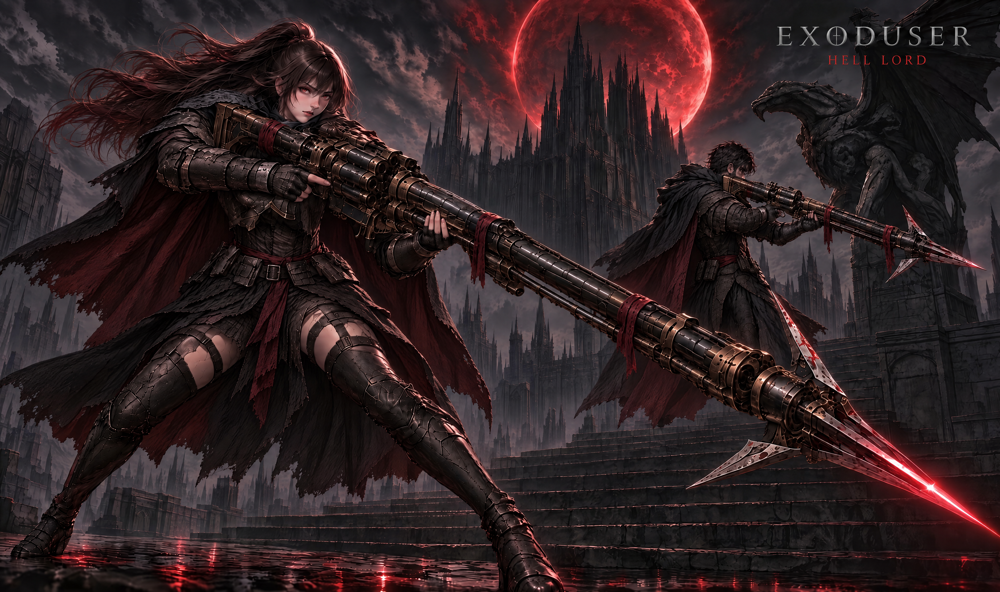
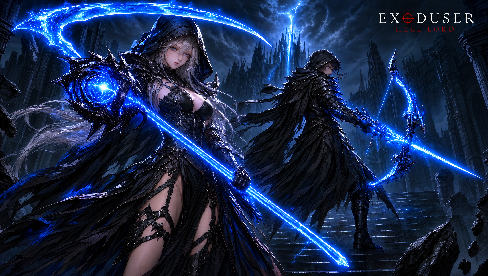
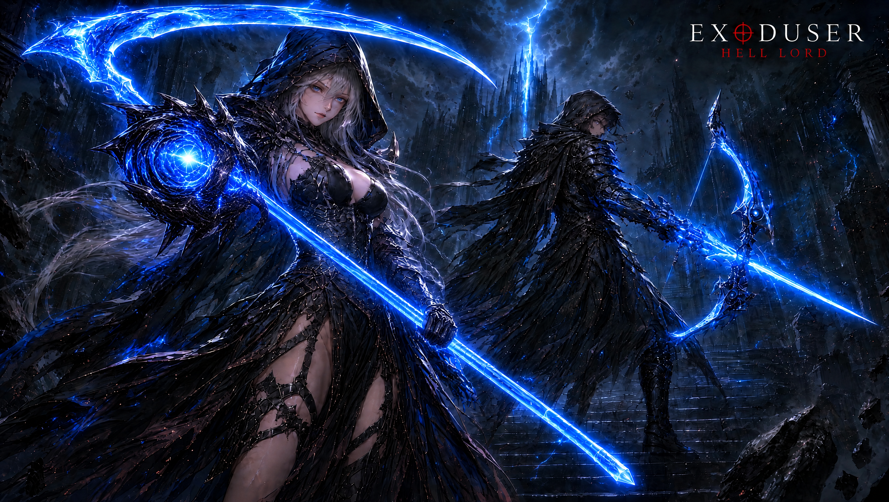
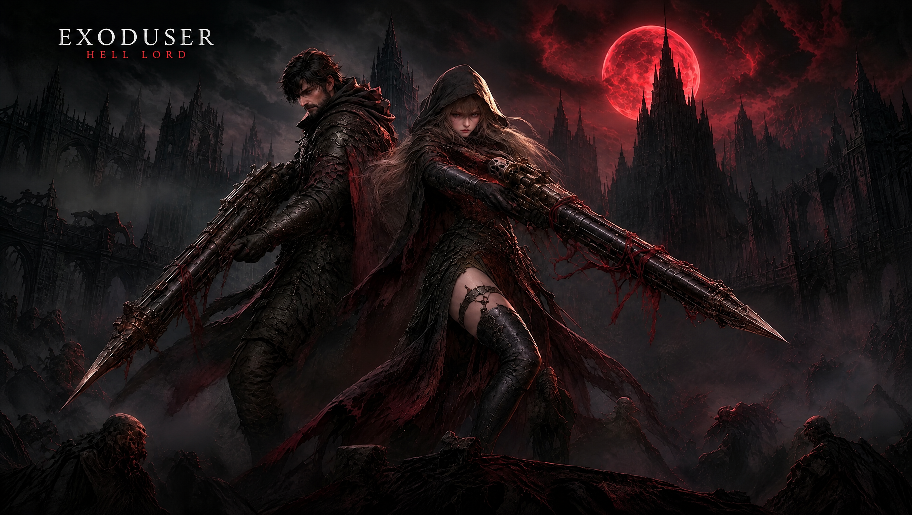
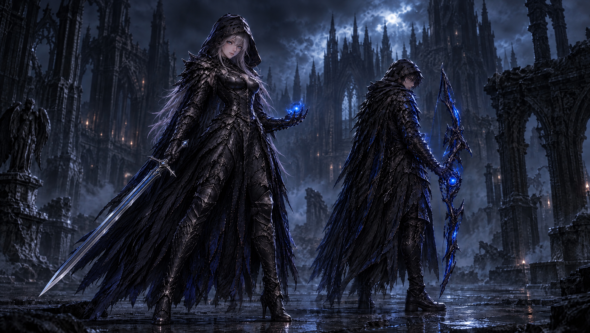
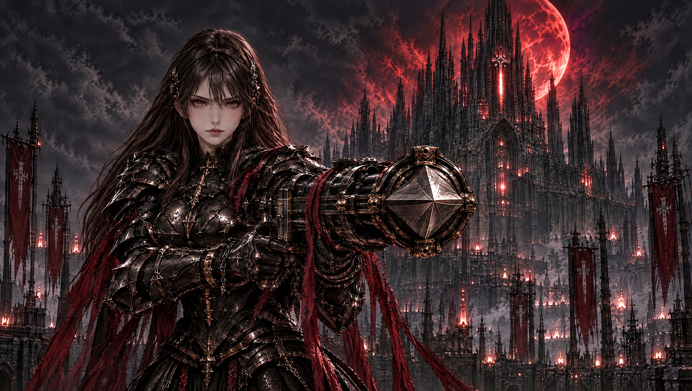
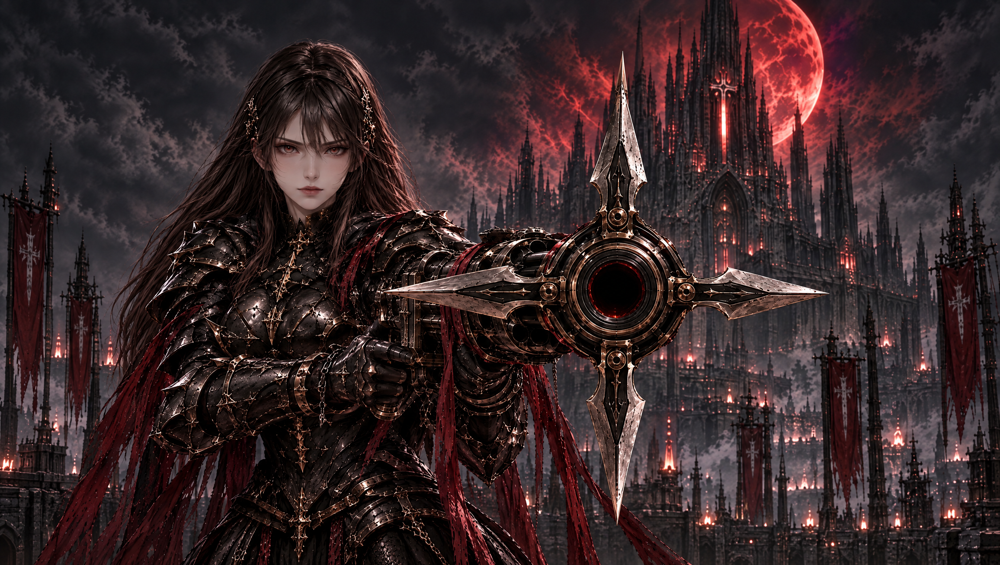

움직이기 직전의 캐릭터들
자세와 무기 상태를 정리한 영상용 기준 이미지. 이미지를 누르면 원본을 볼 수 있습니다.

헬 헌터 — 붉은 천 정리
흩날리던 긴 붉은 조각을 크게 줄이고, 어깨에 연결된 망토·짧은 허리 장식·총기 감김으로 정리했습니다. 점 노이즈와 배경 십자가를 제거한 상태도 유지했습니다. 실제 출력 3456×2048 · 이번 수정 15크레딧.
Higgsfield 결과 · 설정·전체 오더 · 이전 원화의 Kling 영상

생성 편집으로 얼굴·각인·천 주름에 미세한 차이가 있습니다. 이 v3를 사용한 Seedance 2.5 아이들 영상을 제작했습니다. 영상은 사용자 검토 대기입니다.

변성술사 — 점·입자 정리
공중 파편과 촘촘한 반짝임을 정리했습니다. 큰 코어 장갑·에너지 낫·남캐 활은 유지했습니다. 2688×1520 · 9크레딧.
Higgsfield 결과 · 설정·오더 · 이전 v4로 만든 Seedance 영상
점 정리 전후 비교
이전 v4



수정 이미지 확인 후 영상 제작을 진행합니다. 장갑이 누락됐던 v3 · 이전 금속 낫 해석 · 반려된 첫 낫 시안



총사 — 시작은 닫힌 작살 총구
여캐도 남캐처럼 닫힌 상태로 시작합니다. 발포할 때만 네 방향으로 열리고 중앙 포구에서 발사한 뒤 다시 닫힙니다.
영상은 이 이미지 컨펌 후 제작합니다. 발포 시 개방 구조 참고는 시작 이미지가 아닙니다.


변성술사 — 이전 장검 시안
거대 낫 변경 전의 검토용 이미지입니다. 최신 무기 시안은 위의 거대 낫입니다.

아케인 랜서 — 시전 전
창끝과 발 주변에 여백을 두고 큰 마법진을 제거했습니다.

실버테일 — 등검 대기
흰 포니테일, 등 허브와 두꺼운 등검이 보이는 후면 사선 자세.
이전 정면 시안 — 구조 참고
최신 선택 구도는 위의 남녀 이미지입니다. 아래 두 장은 닫힘·개방 구조를 살펴보기 위한 이전 정면 시안이며, 최신 남녀 이미지의 시작·끝 프레임 쌍이 아닙니다.




영상 생성 전의 이미지 검수본입니다. 실제 영상에서 총구 개폐와 인물·무기 형태가 유지되는지는 후속 검증이 필요합니다.